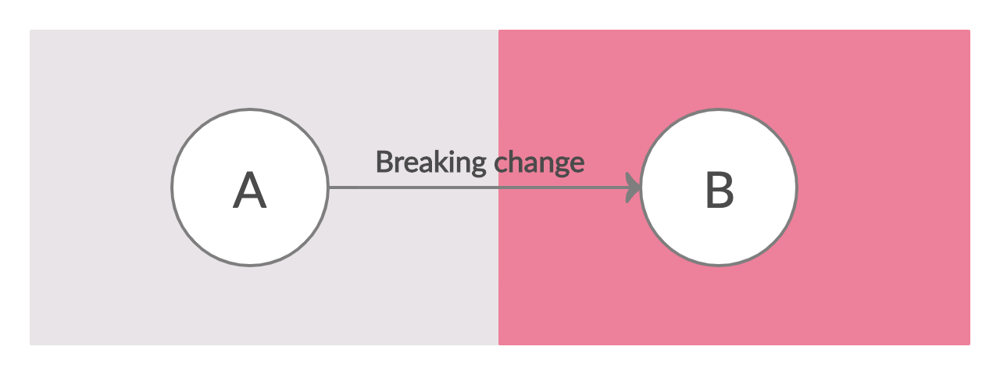
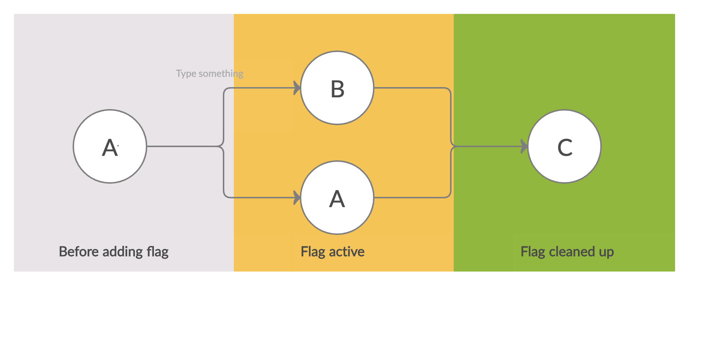

How to do Feature Flag-Driven Development
Written: Apr 30, 2020
Introduction
Feature flags are a set of development patterns that allow writing web apps that behave differently for certain segments of users. This post provides a rationale for using feature flags and recommends a set of best practices for development.
Why use feature flags?
This post assumes that you’re following the continuous delivery model of a single master branch into which all changes are merged.
The process of adding features to a SaaS application is a pipeline: product/engineering spec → code review/merge/test → QA/documentation. In any company of a reasonable size there will be multiple such pipelines active at any given time. A successful engineering organization must be able to deliver many new features quickly while not compromising on the quality of the product.
Let us consider an example of a medium sized feature that requires changes on the backend and frontend, and which might take 3-4 weeks to move through the pipeline. In a development model that doesn’t use feature flags, we usually have to maintain a feature branch on both the backend and frontend for the entire 3-4 week period and they need to be merged and deployed together. This model has a number of problems:
- Code review is hard: Since the changes cannot be merged to master, it’s harder to break up the feature into small, incremental pull requests. This forces us to review the entire feature at once.
- Testing is hard: It might be too complicated to setup a new staging environment for each feature branch, thus testing would be restricted to whatever is possible to do locally. This is especially hard if your product has many third-party integrations.
- Merging is hard: When the engineer is ready to merge their code into the master branch, they might discover that changes merged by others in the intervening period cause conflicts. This problem gets worse the longer the feature remains in development. Resolving the complicated merge conflicts can easily lead to bugs being introduced.
- Documentation is hard: If non-engineering teams such as Product Marketing or Customer Success wish to understand a feature, they have to wait until it’s in production or figure out how to use the specific test environment setup for that feature. This increases friction and causes delays.
- Deployment is risky: The frontend and backend changes often have a strict dependency and must be deployed together. If we forget this and only deploy one of them, it can lead to production issues. The feature also goes live for all customers at once, which means if something goes wrong it affects everyone.
In summary, trying to do continuous delivery without using feature flags makes the whole process a rigid and tightly coupled. Things must happen in a certain order and the stakeholders must co-ordinate closely. It’s an “all-in” jump from state A to state B, as in the diagram below:

In the feature flag model of development, enabling a flag causes the app to split into two versions, A and B. One segment of users continue to see the old version of the app, A, while another segment starts seeing the new version B. The proportions of these segments is slowly adjusted until no users see version A. At this point the flag can be removed from the codebase and as a consequence the app merges back into a single version, C. Obviously this happens to every feature flag that’s defined in the system, thus if there are \(n\) flags active at a given time, there could be upto \(2^n\) versions of the app in production. This can sound overwhelming but as long as the product areas controlled by these flags don’t overlap too much, the effective number of “different” versions is much smaller than \(2^n\).

This model of development is much more flexible and loosely coupled, and brings with it many benefits:
- Code review is easier: A feature can be split into multiple pull requests that can be reviewed and merged independently. Since everything is behind a feature flag, deploying these PRs to production has no effect until the flag is turned on.
- Testing is easier: Testing can be done in the standard staging environment or even in production, by turning on the feature for a single user. This is especially useful for testing things that have real-world interactions, like moving money.
- Merging is trivial: Merge conflicts are rare because there are no long-lived branches that have diverged from master.
- Documentation is easier: The non-engineering teams can try the feature on staging or on production even while testing on the feature is still ongoing.
- Deployment is less risky: There is no dependency among backend and frontend deployments. Risky or large features (for example, shipping checks) can be rolled out slowly and tweaked based on real-world experience.
Designing for Feature Flags
Using feature flags effectively requires some thought during the design process. This section lists a few guiding principles for good design.
When to use a flag
As a rule of thumb, something should be put behind a feature flag if it’s substantial, user-visible, or risky.
- Substantial: If a change is really small, putting it behind a feature flag is not worth the trouble. A good rule of thumb might be: if the entire change can be a single pull request that’s no more than a few pages long, it doesn’t need to be behind a feature flag.
- User-visible: If a change is invisible to the user and doesn’t modify any existing behavior, it doesn’t need a feature flag. Examples of such changes are refactors, backwards-compatible API changes, addition of new API endpoints, etc.
- Risky: Feature flags are primarily a tool to mitigate risk. So any change that where the cost of a bug is high should be gated behind a feature flag. This is especially important for changes that cannot be fully tested in staging environments.
Diverge at the highest level
All feature flags need to be cleaned up eventually, thus it’s best to minimize the number of places where a flag is evaluated and behavior diverges. It is worth paying attention to this aspect both when writing the product/engineering spec as well as when writing code. A few examples:
- It is easier to put an entire screen or a tab behind a flag rather than parts of it.
- It is easier to add a new endpoint and deprecate the old one than trying to make the same endpoint exhibit two kinds of behavior.
- It’s better to add new model methods, or write a new background job than add flag checks throughout the body of those methods and jobs.
Code duplication is okay. Minimizing the number of if (flag) checks reduces the number of possible states we have to keep in our heads, leading to higher quality code. A temporary increase in duplicate code is an easy price to pay for it.
The 3-step data model change
Let’s say you have a DB model in your app called Concert that represents a musical event:
class Concert:
...
is_finished = BooleanField()There are already lots of endpoints and frontend code that consumes the is_finished field. Now let’s say there’s a requirement to track more information than just “is finished or not?” — we want a concert to have three states: NOT_STARTED, IN_PROGRESS, FINISHED. How do we do this without a single breaking change?
Step 1: Add the new write path
We add a new field state to the class and change all write paths to update both the old is_finished field and the new state field. No code is reading the new field yet. We also run a migration on the production DB to set the value of state for all existing concerts.
class Concert:
...
is_finished = BooleanField()
state = ChoiceField(choices=["NOT_STARTED", "IN_PROGRESS", "FINISHED")Step 2: Start reading/writing, deploy the feature
Make changes across the codebase to start using the state field instead of the old field. This step is when we actually develop and deploy the new feature that required us to do the data model change. Most of these changes will be behind a flag.
Step 3: Clean up
Once all customers are going through the new code path, remove the feature flag and remove the is_finished field entirely.
class Concert:
...
state = ChoiceField(choices=["NOT_STARTED", "IN_PROGRESS", "FINISHED")This is a very specific example but the 3-step pattern is generally applicable. Most 1-step breaking changes can be redesigned into this 3-step shape to facilitate use of a feature flag.
Caution
In a growing company it’s easy to keep adding feature flags and never prioritize cleaning them up. Each unique combination of flags becomes a new “flavor” of your product. Your mental model for investigating every bug report needs to start with “When a user with flags {f1, f2, f3} turned on clicks a button …”.
There needs to be some force counterbalancing this in the org. This can take the form of a hard budget (“no more than 50 flags in the codebase at any time”), quarterly clean up drives, and so on. One of the ideas I’ve tried that worked pretty well was a tax: “every PR that introduces a new flag into the codebase must be also clean up N unused flags”.